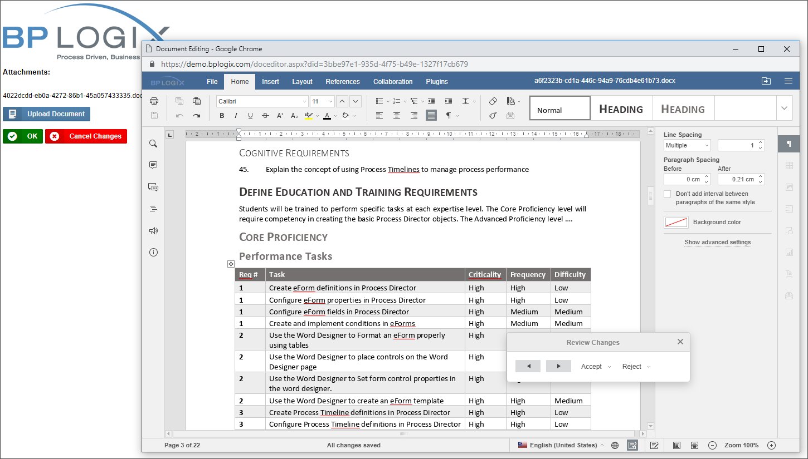

Collaborative Document Authoring is a separately licensed component that is only available for Cloud installations.
Collaborative Document Authoring is a separately licensed component that is only available for Cloud installations.For users of Process Director v5.13 and higher, document attachments may be annotated using Collaborative Document Authoring.
Collaborative Document Authoring is a separately licensed component that is only available for Cloud installations.

Please see the documentation for the ShowAttach control to see how to enable Collaborative Document Authoring for attachments.
Collaborative Document Authoring is a cloud-based service, OnlyOffice, that opens a number of file formats in an online editor for collaborative authoring and editing, change tracking, etc. The documentation for the Document, Spreadsheet and Presentation editors is available at the OnlyOffice documentation web site.
The following file formats can be authored in the OnlyOffice editors:
For Process Director v6.1.500 and higher, CDA can optionally be used in conjunction with Microsoft 365 (M365), rather than the OnlyOffice service. M365 was formerly called "Office 365" until 2025, when it was renamed. M365 is an online service that provides online access to, storage for, and use of all the productivity applications that have been part of the Microsoft Office software suite for many years, such as Microsoft Word®, Excel®, PowerPoint®, etc.
Additional configuration is required to use M365 as the editor for CDA documents.
The configuration of M365 CDA is a stand-alone process and is completely unrelated to other, similar features, such as OAuth for SMTP through Microsoft Azure or the SharePoint Datasource object, both of which will require their own, unique settings and configuration.
Additionally, the use of M365 for CDA will require users to create and use an additional authentication for accessing M365 documents.
A PDF file for end-to-end Azure/Entra configuration for all Process Director features can be found here: Configuring Azure For Process Director (PDF Download)